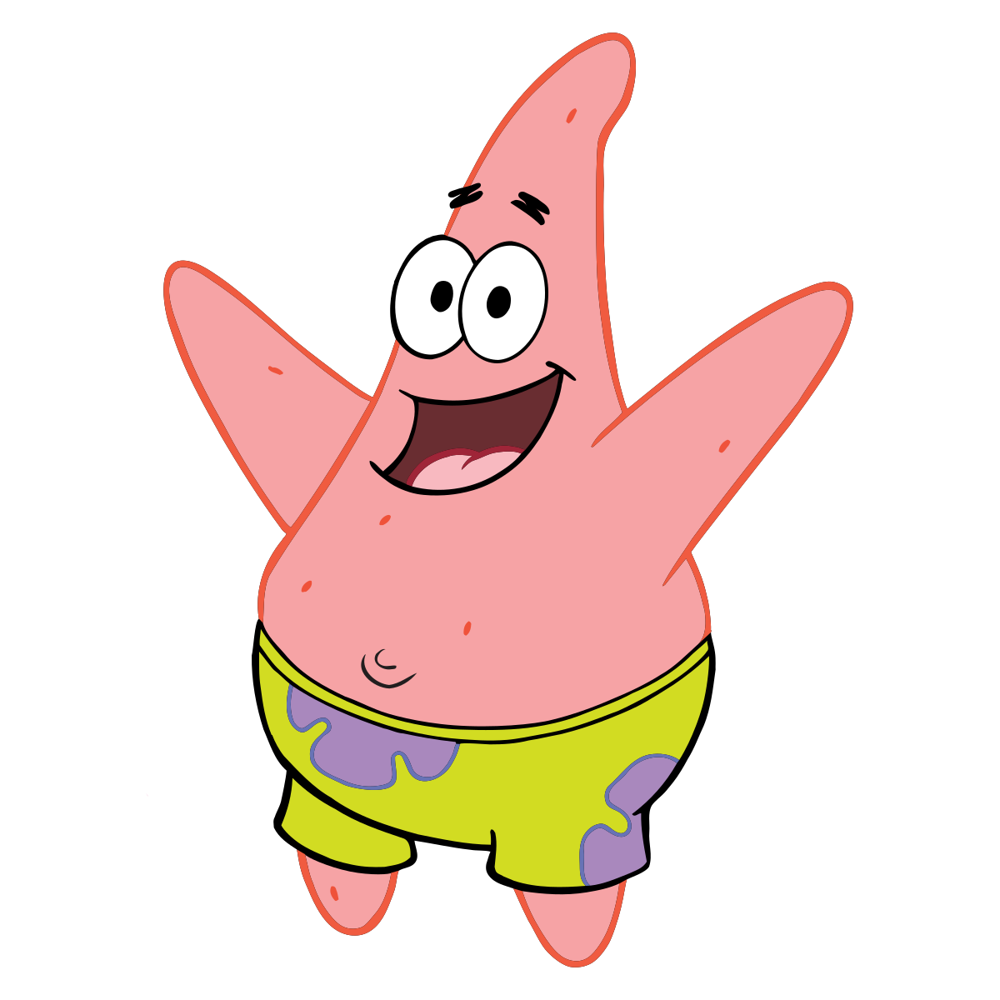

Spongebob Characters
| CHARACTER | DESCRIPTION | FACTS |
|---|---|---|
SPONGEBOB |
The main character in the series "Spongebob Squarepants." He is a yellow, bubbly, and happy sponge who lives in Bikini bottom with his friends and the work he loves. |
|
| PATRICK | Spongebobs bestfriend in the series "Spongebob Squarepants," as well as a comedy relief character with his fun and naive personality. |
|
| SQUIDWARD | Another one of Spongebobs friends in the series "Spongebob Squarepants." He is also Spongebobs coworker in the Krusty Krab wherein he works as the cashier. |
|
| MR. KRABS | Mr. Krabs is Spongebobs boss in the series "Spongebob Squarepants." He highly values his secret formula to the perfection of the kraby patty and is a very well-off man. |
|
GARY |
In the series, Gary is Spongebob's pet snail who deeply cares about Spongebob though he can get annoyed at times. |
|